layout: true .toc.banner[ .sevinlogo[ ] .shorttitle[ Research in Russia ] ] --- name: home class: metadata customtitle middle left giphy .toc.sidebar.left-column[ .outline[ # [.pass[Activity] ](#He38f8) # [.pass[Results] ](#H962da) # [.pass[Publications] ](#bib) ] ] .toc.mainbar.right-column.scrollable[ .authors[ .author[Sergey Naidenko, .speaker[Nikita Platonov], Ilya Mordvintsev, Evgeny Ivanov, Svetlana Artemieva] .institute[Severtsov Institute of Ecology and Evolution of the Russian Academy of Sciences] ] .title[ Polar Bear Research in Russia in 2023-2025 ] .subtitle[ conducted by the Severtsov Institute of Ecology and Evolution of the Russian Academy of Sciences ] .what[ Polar Bear Range States Meeting of the Parties ] .where[ ] .when[ December 2-5, 2025 .updated[Updated: 2025-11-13 18:17] ] ] --- name: He38f8 .toc.sidebar.left-column[ .outline[ # [.pass[Activity] ](#He38f8).fg[] ## [Research program](#He38f8) <span class="bullet bullet-active">[•](#He38f8)</span><span class="bullet mslide7m">[•](#H427c6)</span>.fg[].bg[] ## [Main methods](#H3a99a) # [.pass[Results] ](#H962da) # [.pass[Publications] ](#bib) ] ] .toc.mainbar.right-column.scrollable[ .header.h2.show[ Program of polar bear study in the Russian Arctic .parent[.grand[.pass[Activity]]] ] .fixprecode[ .grid[ 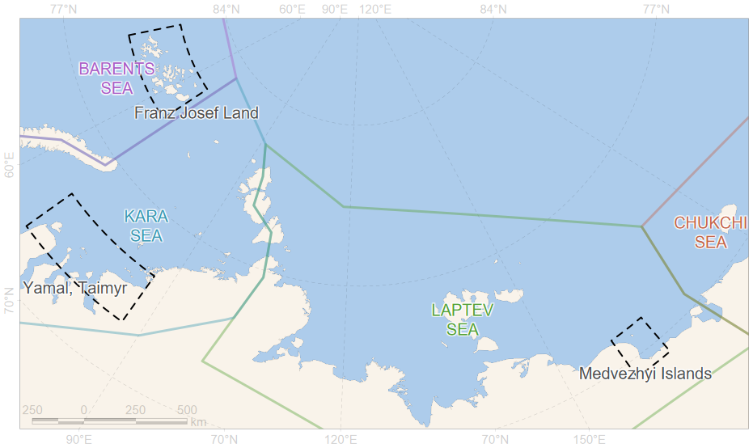 .shared[ The Institute of Ecology and Evolution of the Russian Academy of Sciences (IEE RAS) continues polar bear research in the Russian Arctic, which began in 2010 under the Program of the Russian Academy of Sciences. Research is being conducted in accordance with the Strategy for the Conservation of Polar Bears in the Russian Federation for the period until 2030. ] ] In 2023-2025, we carried out polar bear monitoring on the Franz Josef Land Archipelago, islands in the Kara Sea near by Yamal and Taimyr Peninsulas, and the Medvezhyi Islands (*Bear Islands*) Archipelago in the East Siberian Sea. ] ] ??? The Institute of Ecology and Evolution of the Russian Academy of Sciences (IEE RAS) continues polar bear research in the Russian Arctic, which began in 2010 under the Program of the Russian Academy of Sciences. Research is being conducted in accordance with the Strategy for the Conservation of Polar Bears in the Russian Federation for the period until 2030. --- name: H427c6 .toc.sidebar.left-column[ .outline[ # [.pass[Activity] ](#He38f8).fg[] ## [Research program](#He38f8) <span class="bullet bullet">[•](#He38f8)</span><span class="bullet bullet-active">[•](#H427c6)</span>.fg[].bg[] ## [Main methods](#H3a99a) # [.pass[Results] ](#H962da) # [.pass[Publications] ](#bib) ] ] .toc.mainbar.right-column.scrollable[ .header.h2.show[ Program of polar bear study in the Russian Arctic .parent[.grand[.pass[Activity]]] ] .fixprecode[ .grid[ 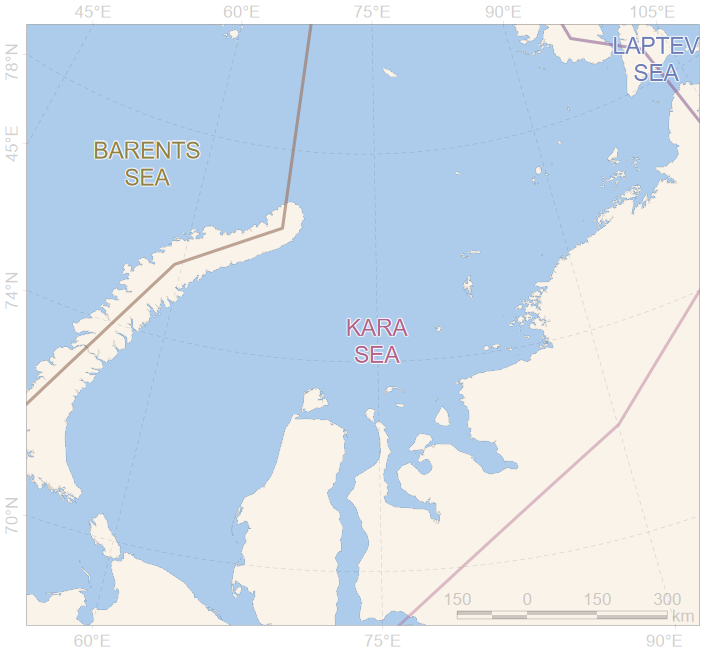 .desc[ During 2023-2025 period, the main focus was on research and monitoring of the Kara Sea polar bear subpopulation (IUCN Red List Category – VU - Vulnerable) ] ] ] ] --- name: H3a99a .toc.sidebar.left-column[ .outline[ # [.pass[Activity] ](#He38f8).fg[] ## [Research program](#He38f8) ## [Main methods](#H3a99a).fg[].bg[] # [.pass[Results] ](#H962da) # [.pass[Publications] ](#bib) ] ] .toc.mainbar.right-column.scrollable[ .header.h2.show[ Main methods of polar bears research .parent[.grand[.pass[Activity]]] ] .fixprecode[ .pulling[ .pull-left-70[ + Study of abundance and distribution of polar bears + Field survey and observations + Aerial and ship survey and observations + Satellite telemetry for evaluating the polar bear movement, behaviour and resource use + Health assessment of polar bears and study of the influence of natural and anthropogenic factors on the animal health + Dangerous diseases (serological study) + Hematological study + Toxicological study + Polar bear population structure studies by molecular genetic methods ] .pull-right-30[ .untouchable[ 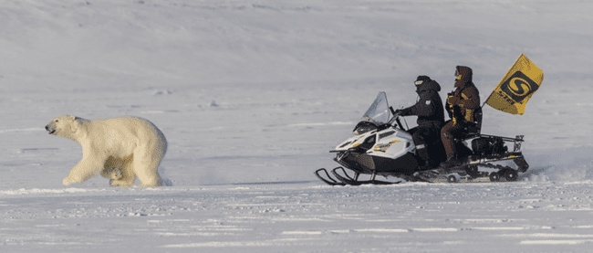 <img src="assets/shooting.jpg" width="1330" height="700" untouchable style="display: block; margin: auto auto auto 0;" /> <img src="assets/measuring.jpg" width="1330" height="700" untouchable style="display: block; margin: auto auto auto 0;" /> ] ] ] ] ] --- name: H962da .toc.sidebar.left-column[ .outline[ # [.pass[Activity] ](#He38f8) # [.pass[Results] ](#H962da).fg[] ## [Field work](#H962da).fg[].bg[] ### [Surveys](#He63e7) ### [Captures](#Hb4cd4) ### [Tagging](#H01031) ## [Satellite telemetry](#H3ffd0) ## [.pass[Aerial surveys] ](#H2ffc7) ## [.pass[Health assessment] ](#H8e245) # [.pass[Publications] ](#bib) ] ] .toc.mainbar.right-column.scrollable[ .header.h2.show[ Field work results in 2023-2025 .parent[.grand[.pass[Results]]] ] .fixprecode[ .pulling[ .pull-left-70[ **11** expeditions to the Barents, Kara and East Siberian Seas were carried out in spring and summer-autumn seasons; **338** polar bears were recorded during observations; **34** polar bears were captured during this period; **13** females and **6** males were tagged with satellite transmitters; **102** biological samples were taken from immobilized individuals (blood, hair, excrement); ] .pull-right-30[ .untouchable[ 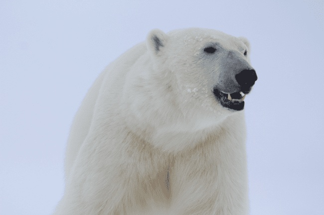 <img src="assets/polarbear-group.jpg" width="1330" height="700" untouchable style="display: block; margin: auto auto auto 0;" /> ] ] ] ] ] --- name: He63e7 .toc.sidebar.left-column[ .outline[ # [.pass[Activity] ](#He38f8) # [.pass[Results] ](#H962da).fg[] ## [Field work](#H962da).fg[] ### [Surveys](#He63e7).fg[].bg[] ### [Captures](#Hb4cd4) ### [Tagging](#H01031) ## [Satellite telemetry](#H3ffd0) ## [.pass[Aerial surveys] ](#H2ffc7) ## [.pass[Health assessment] ](#H8e245) # [.pass[Publications] ](#bib) ] ] .toc.mainbar.right-column.scrollable[ .header.h3.show[ Number of polar bears observed, 2023-2025 .parent[.grand[Field work .grand[.pass[Results]]]] ] .fixprecode[ <img src="assets/PBRS-survey.png" width="1330" height="700" style="display: block; margin: auto auto auto 0;" /> ] ] --- name: Hb4cd4 .toc.sidebar.left-column[ .outline[ # [.pass[Activity] ](#He38f8) # [.pass[Results] ](#H962da).fg[] ## [Field work](#H962da).fg[] ### [Surveys](#He63e7) ### [Captures](#Hb4cd4).fg[].bg[] ### [Tagging](#H01031) ## [Satellite telemetry](#H3ffd0) ## [.pass[Aerial surveys] ](#H2ffc7) ## [.pass[Health assessment] ](#H8e245) # [.pass[Publications] ](#bib) ] ] .toc.mainbar.right-column.scrollable[ .header.h3.show[ Number of polar bears captured, 2023-2025 .parent[.grand[Field work .grand[.pass[Results]]]] ] .fixprecode[ 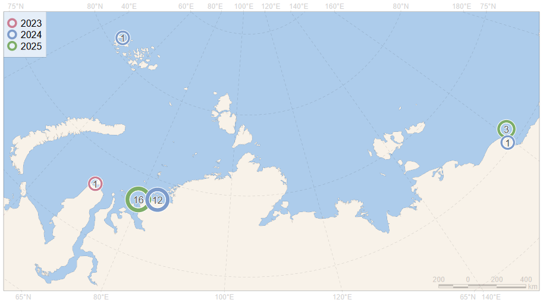 ] ] --- name: H01031 .toc.sidebar.left-column[ .outline[ # [.pass[Activity] ](#He38f8) # [.pass[Results] ](#H962da).fg[] ## [Field work](#H962da).fg[] ### [Surveys](#He63e7) ### [Captures](#Hb4cd4) ### [Tagging](#H01031).fg[].bg[] #### [Kara Sea](#H8c2a3) #### [East Siberian Sea](#H3ffd0) ## [Satellite telemetry](#H3ffd0) ## [.pass[Aerial surveys] ](#H2ffc7) ## [.pass[Health assessment] ](#H8e245) # [.pass[Publications] ](#bib) ] ] .toc.mainbar.right-column.scrollable[ .header.h3.show[ Number of polar bears tagged, 2023-2025 .parent[.grand[Field work .grand[.pass[Results]]]] ] .fixprecode[ <img src="assets/PBRS-collar.png" width="1330" height="700" style="display: block; margin: auto auto auto 0;" /> We use satellite-linked radio and GPS collars for females and ear-mounted satellite tags for male, produced by the Russian company "EsPas". ] ] ??? Tagging of polar bears was carried out in the Kara Sea fast ice near Taimyr Peninsula in April - May, 2025 and on the islands in the Kara and East Siberian Seas - on land during the ice-free period (August - October, 2024-2025). --- name: H8c2a3 .toc.sidebar.left-column[ .outline[ # [.pass[Activity] ](#He38f8) # [.pass[Results] ](#H962da).fg[] ## [Field work](#H962da).fg[] ### [Surveys](#He63e7) ### [Captures](#Hb4cd4) ### [Tagging](#H01031).fg[] #### [Kara Sea](#H8c2a3) <span class="bullet bullet-active">[•](#H8c2a3)</span><span class="bullet mslide16m">[•](#H20e0d)</span><span class="bullet mslide17m">[•](#H57e7e)</span>.fg[].bg[] #### [East Siberian Sea](#H3ffd0) ## [Satellite telemetry](#H3ffd0) ## [.pass[Aerial surveys] ](#H2ffc7) ## [.pass[Health assessment] ](#H8e245) # [.pass[Publications] ](#bib) ] ] .toc.mainbar.right-column.scrollable[ .header.h4.show[ Satellite tagging of polar bears in the Kara Sea, 2024-2025 .parent[.grand[Tagging .grand[Field work] .grand[.pass[Results]]]] ] .fixprecode[ 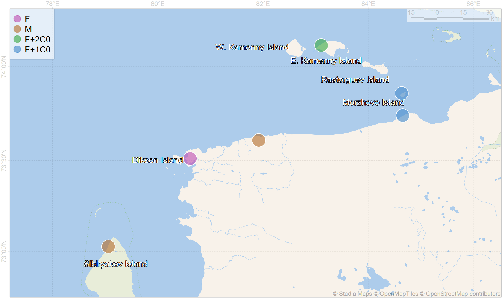 August-September, 2024. 6 polar bears (4 females and 2 males) were tagged on land during the ice-free period ] ] --- name: H20e0d .toc.sidebar.left-column[ .outline[ # [.pass[Activity] ](#He38f8) # [.pass[Results] ](#H962da).fg[] ## [Field work](#H962da).fg[] ### [Surveys](#He63e7) ### [Captures](#Hb4cd4) ### [Tagging](#H01031).fg[] #### [Kara Sea](#H8c2a3) <span class="bullet bullet">[•](#H8c2a3)</span><span class="bullet bullet-active">[•](#H20e0d)</span><span class="bullet mslide17m">[•](#H57e7e)</span>.fg[].bg[] #### [East Siberian Sea](#H3ffd0) ## [Satellite telemetry](#H3ffd0) ## [.pass[Aerial surveys] ](#H2ffc7) ## [.pass[Health assessment] ](#H8e245) # [.pass[Publications] ](#bib) ] ] .toc.mainbar.right-column.scrollable[ .header.h4.show[ Satellite tagging of polar bears in the Kara Sea, 2024-2025 .parent[.grand[Tagging .grand[Field work] .grand[.pass[Results]]]] ] .fixprecode[ <img src="assets/collar-2025.png" width="1330" height="700" tagging style="display: block; margin: auto auto auto 0;" /> April-May, 2025. 9 polar bears (5 females and 4 males) were tagged on fast ice ] ] --- name: H57e7e .toc.sidebar.left-column[ .outline[ # [.pass[Activity] ](#He38f8) # [.pass[Results] ](#H962da).fg[] ## [Field work](#H962da).fg[] ### [Surveys](#He63e7) ### [Captures](#Hb4cd4) ### [Tagging](#H01031).fg[] #### [Kara Sea](#H8c2a3) <span class="bullet bullet">[•](#H8c2a3)</span><span class="bullet bullet">[•](#H20e0d)</span><span class="bullet bullet-active">[•](#H57e7e)</span>.fg[].bg[] #### [East Siberian Sea](#H3ffd0) ## [Satellite telemetry](#H3ffd0) ## [.pass[Aerial surveys] ](#H2ffc7) ## [.pass[Health assessment] ](#H8e245) # [.pass[Publications] ](#bib) ] ] .toc.mainbar.right-column.scrollable[ .header.h4.show[ Satellite tagging of polar bears in the Kara Sea, 2024-2025 .parent[.grand[Tagging .grand[Field work] .grand[.pass[Results]]]] ] .fixprecode[ <img src="assets/collar-2025-s1.png" width="1330" height="700" tagging style="display: block; margin: auto auto auto 0;" /> ] ] --- name: H3ffd0 .toc.sidebar.left-column[ .outline[ # [.pass[Activity] ](#He38f8) # [.pass[Results] ](#H962da).fg[] ## [Field work](#H962da) ## [Satellite telemetry](#H3ffd0) <span class="bullet bullet-active">[•](#H3ffd0)</span><span class="bullet mslide22m">[•](#H0ca04)</span><span class="bullet mslide23m">[•](#H7ba77)</span>.fg[].bg[] ### [Daily displacement](#Hd3157) ### [Sea ice habitat](#H6ad8e) ## [.pass[Aerial surveys] ](#H2ffc7) ## [.pass[Health assessment] ](#H8e245) # [.pass[Publications] ](#bib) ] ] .toc.mainbar.right-column.scrollable[ .header.h2.show[ Evaluating of the polar bear movements by satellite telemetry .parent[.grand[.pass[Results]]] ] .fixprecode[ .grid[ 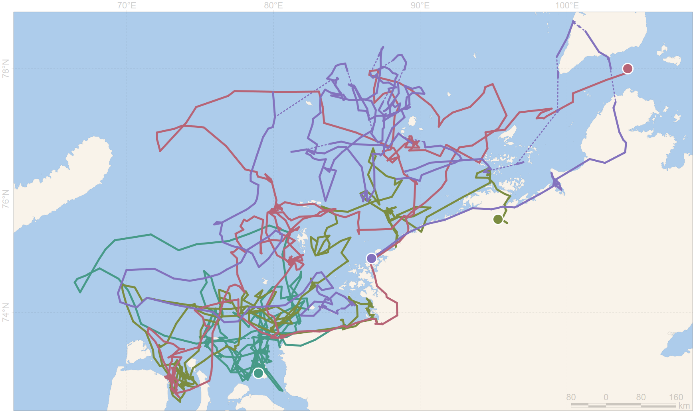 .shared[ ] ] Movement trajectories of 4 polar bear females in the Kara Sea, captured in 2024 on the islands and coast of Taimyr. ] ] ??? During the tracking period in 2024/2025 females moved only in the southern part of the Kara Sea water area (aquatory). --- name: H0ca04 .toc.sidebar.left-column[ .outline[ # [.pass[Activity] ](#He38f8) # [.pass[Results] ](#H962da).fg[] ## [Field work](#H962da) ## [Satellite telemetry](#H3ffd0) <span class="bullet bullet">[•](#H3ffd0)</span><span class="bullet bullet-active">[•](#H0ca04)</span><span class="bullet mslide23m">[•](#H7ba77)</span>.fg[].bg[] ### [Daily displacement](#Hd3157) ### [Sea ice habitat](#H6ad8e) ## [.pass[Aerial surveys] ](#H2ffc7) ## [.pass[Health assessment] ](#H8e245) # [.pass[Publications] ](#bib) ] ] .toc.mainbar.right-column.scrollable[ .header.h2.show[ Evaluating of the polar bear movements by satellite telemetry .parent[.grand[.pass[Results]]] ] .fixprecode[ .grid[ 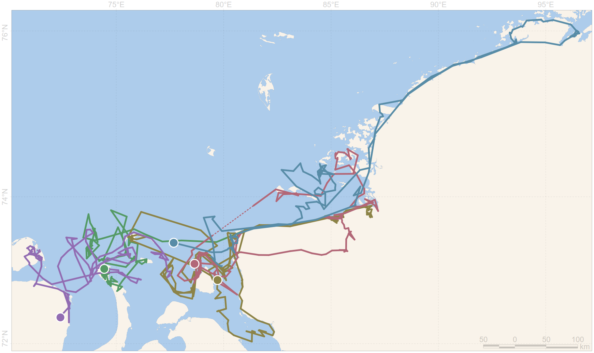 .shared[ During the tracking period in 2025 females moved only in the southern part of the Kara Sea water area (aquatory). ] ] Movement trajectories of 5 polar bear females in the Kara Sea, captured in 2025 on fast ice ] ] --- name: H7ba77 .toc.sidebar.left-column[ .outline[ # [.pass[Activity] ](#He38f8) # [.pass[Results] ](#H962da).fg[] ## [Field work](#H962da) ## [Satellite telemetry](#H3ffd0) <span class="bullet bullet">[•](#H3ffd0)</span><span class="bullet bullet">[•](#H0ca04)</span><span class="bullet bullet-active">[•](#H7ba77)</span>.fg[].bg[] ### [Daily displacement](#Hd3157) ### [Sea ice habitat](#H6ad8e) ## [.pass[Aerial surveys] ](#H2ffc7) ## [.pass[Health assessment] ](#H8e245) # [.pass[Publications] ](#bib) ] ] .toc.mainbar.right-column.scrollable[ .header.h2.show[ Evaluating of the polar bear movements by satellite telemetry .parent[.grand[.pass[Results]]] ] .fixprecode[ .grid[ <img src="assets/track-M-2024-2025.png" width="1330" height="700" tracking style="display: block; margin: auto auto auto 0;" /> .shared[ ] ] Movement trajectories of polar bear males in the Kara Sea, captured in 2024 on shoreline and in 2025 on fast ice. ] ] ??? Movement trajectories of 9 females in the Kara Sea, captured in 2024-2025 --- name: Hd3157 .toc.sidebar.left-column[ .outline[ # [.pass[Activity] ](#He38f8) # [.pass[Results] ](#H962da).fg[] ## [Field work](#H962da) ## [Satellite telemetry](#H3ffd0).fg[] ### [Daily displacement](#Hd3157) <span class="bullet bullet-active">[•](#Hd3157)</span><span class="bullet mslide26m">[•](#H0bcd8)</span><span class="bullet mslide28m">[•](#Hec75a)</span>.fg[].bg[] ### [Sea ice habitat](#H6ad8e) ## [.pass[Aerial surveys] ](#H2ffc7) ## [.pass[Health assessment] ](#H8e245) # [.pass[Publications] ](#bib) ] ] .toc.mainbar.right-column.scrollable[ .header.h3.show[ Polar bears daily displacement .parent[.grand[Satellite telemetry .grand[.pass[Results]]]] ] .fixprecode[ .grid[ <img src="assets/dailyshift-hr.png" width="1330" height="700" invertable style="display: block; margin: auto auto auto 0;" /> .shared[ Daily displacement was low before middle of October 2024 with values values, close to zero. Then the polar bears mobility was increased, with missed zero values until December 2024. Next active period was between February and April. In May number of points was increased in result of new tagging. ] ] Daily movements of 15 polar bears over a period of more than 12 months ] ] --- name: H0bcd8 .toc.sidebar.left-column[ .outline[ # [.pass[Activity] ](#He38f8) # [.pass[Results] ](#H962da).fg[] ## [Field work](#H962da) ## [Satellite telemetry](#H3ffd0).fg[] ### [Daily displacement](#Hd3157) <span class="bullet bullet">[•](#Hd3157)</span><span class="bullet bullet-active">[•](#H0bcd8)</span><span class="bullet mslide28m">[•](#Hec75a)</span>.fg[].bg[] ### [Sea ice habitat](#H6ad8e) ## [.pass[Aerial surveys] ](#H2ffc7) ## [.pass[Health assessment] ](#H8e245) # [.pass[Publications] ](#bib) ] ] .toc.mainbar.right-column.scrollable[ .header.h3.show[ Polar bears daily displacement .parent[.grand[Satellite telemetry .grand[.pass[Results]]]] ] .fixprecode[ .grid[ <img src="assets/daily-between-dist2land.png" width="1330" height="700" style="display: block; margin: auto auto auto 0;" /> .shared[ dist2land Adipiscing dapibus fermentum, et ante mollis neque nisl magnis nascetur fames et. Lacinia sodales aliquam laoreet rutrum proin pellentesque phasellus eget fames commodo aliquam dui sodales. Cubilia morbi mattis a hac tempus mus in quisque placerat. Auctor placerat, integer ornare curabitur, luctus nullam cum id, senectus felis aptent neque. ] ] .formula[ Pearson's product-moment correlation <br> `\(\rho(log(\text{daily}), log(|\text{dist2land}|))=0.43\)`, `\(df=2628\)`, `\(p<0.001\)`. ] ] ] ??? Correlation between the polar bears daily movement and distance to the coastline --- name: Hec75a .toc.sidebar.left-column[ .outline[ # [.pass[Activity] ](#He38f8) # [.pass[Results] ](#H962da).fg[] ## [Field work](#H962da) ## [Satellite telemetry](#H3ffd0).fg[] ### [Daily displacement](#Hd3157) <span class="bullet bullet">[•](#Hd3157)</span><span class="bullet bullet">[•](#H0bcd8)</span><span class="bullet bullet-active">[•](#Hec75a)</span>.fg[].bg[] ### [Sea ice habitat](#H6ad8e) ## [.pass[Aerial surveys] ](#H2ffc7) ## [.pass[Health assessment] ](#H8e245) # [.pass[Publications] ](#bib) ] ] .toc.mainbar.right-column.scrollable[ .header.h3.show[ Polar bears daily displacement .parent[.grand[Satellite telemetry .grand[.pass[Results]]]] ] .fixprecode[ .grid[ 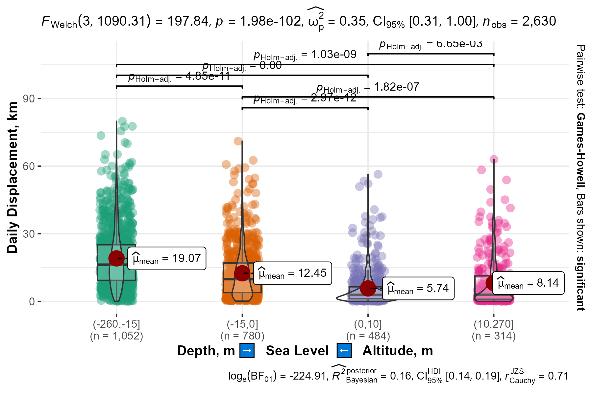 .shared[ gebco Adipiscing et: mi dis magna, placerat mus laoreet mus ornare? Pellentesque magna sociosqu lacinia cum penatibus, mi aptent; duis pellentesque ullamcorper taciti. Id ultrices donec iaculis nec maecenas! ] ] .formula[ Pearson's product-moment correlation <br> `\(\rho(log(\text{daily}), \text{topo})=-0.34\)`, `\(df=2628\)`, `\(p<0.001\)`. ] ] ] ??? Correlation between the polar bears daily movement and sea depths, altitudes --- name: H6ad8e .toc.sidebar.left-column[ .outline[ # [.pass[Activity] ](#He38f8) # [.pass[Results] ](#H962da).fg[] ## [Field work](#H962da) ## [Satellite telemetry](#H3ffd0).fg[] ### [Daily displacement](#Hd3157) ### [Sea ice habitat](#H6ad8e) <span class="bullet bullet-active">[•](#H6ad8e)</span><span class="bullet mslide32m">[•](#H15bb7)</span><span class="bullet mslide33m">[•](#H62bc4)</span>.fg[].bg[] ## [.pass[Aerial surveys] ](#H2ffc7) ## [.pass[Health assessment] ](#H8e245) # [.pass[Publications] ](#bib) ] ] .toc.mainbar.right-column.scrollable[ .header.h3.show[ Sea ice habitat availability and use .parent[.grand[Satellite telemetry .grand[.pass[Results]]]] ] .fixprecode[ .grid[ <img src="assets/icydays-natice-CT81.png" width="1330" height="700" invertable style="display: block; margin: auto auto auto 0;" /> .shared[ Ipsum sodales, sociis interdum convallis etiam etiam nec magna. Cras etiam enim laoreet quis egestas? Euismod pretium auctor suscipit ac metus, mi hendrerit dictumst vitae. Molestie justo risus quisque suscipit sed turpis cubilia faucibus felis pellentesque nunc natoque pellentesque. Scelerisque etiam libero ante senectus enim erat inceptos nullam; nisi curabitur penatibus sollicitudin – molestie magna. ] ] Close sea ice CT81 (ice concentration 80-100 %) is absent longer than half year on 11 % of .bbox[aquatory]. ] ] ??? Annual 2024/2025 ice cover in the Kara Sea, days --- name: H15bb7 .toc.sidebar.left-column[ .outline[ # [.pass[Activity] ](#He38f8) # [.pass[Results] ](#H962da).fg[] ## [Field work](#H962da) ## [Satellite telemetry](#H3ffd0).fg[] ### [Daily displacement](#Hd3157) ### [Sea ice habitat](#H6ad8e) <span class="bullet bullet">[•](#H6ad8e)</span><span class="bullet bullet-active">[•](#H15bb7)</span><span class="bullet mslide33m">[•](#H62bc4)</span>.fg[].bg[] ## [.pass[Aerial surveys] ](#H2ffc7) ## [.pass[Health assessment] ](#H8e245) # [.pass[Publications] ](#bib) ] ] .toc.mainbar.right-column.scrollable[ .header.h3.show[ Sea ice habitat availability and use .parent[.grand[Satellite telemetry .grand[.pass[Results]]]] ] .fixprecode[ .grid[ <img src="assets/daily-icecategory-2024.png" width="1330" height="700" style="display: block; margin: auto auto auto 0;" /> .shared[ Lorem viverra sem – primis laoreet commodo tristique nunc ornare vitae malesuada. Justo porta natoque, hendrerit eget dignissim lectus dignissim? Odio non habitant senectus? ] ] Polar bears' preferred ice concentration, % The high left column (0%) may indicate the use of small ice fields. ] ] --- name: H62bc4 .toc.sidebar.left-column[ .outline[ # [.pass[Activity] ](#He38f8) # [.pass[Results] ](#H962da).fg[] ## [Field work](#H962da) ## [Satellite telemetry](#H3ffd0).fg[] ### [Daily displacement](#Hd3157) ### [Sea ice habitat](#H6ad8e) <span class="bullet bullet">[•](#H6ad8e)</span><span class="bullet bullet">[•](#H15bb7)</span><span class="bullet bullet-active">[•](#H62bc4)</span>.fg[].bg[] ## [.pass[Aerial surveys] ](#H2ffc7) ## [.pass[Health assessment] ](#H8e245) # [.pass[Publications] ](#bib) ] ] .toc.mainbar.right-column.scrollable[ .header.h3.show[ Sea ice habitat availability and use .parent[.grand[Satellite telemetry .grand[.pass[Results]]]] ] .fixprecode[ .grid[ 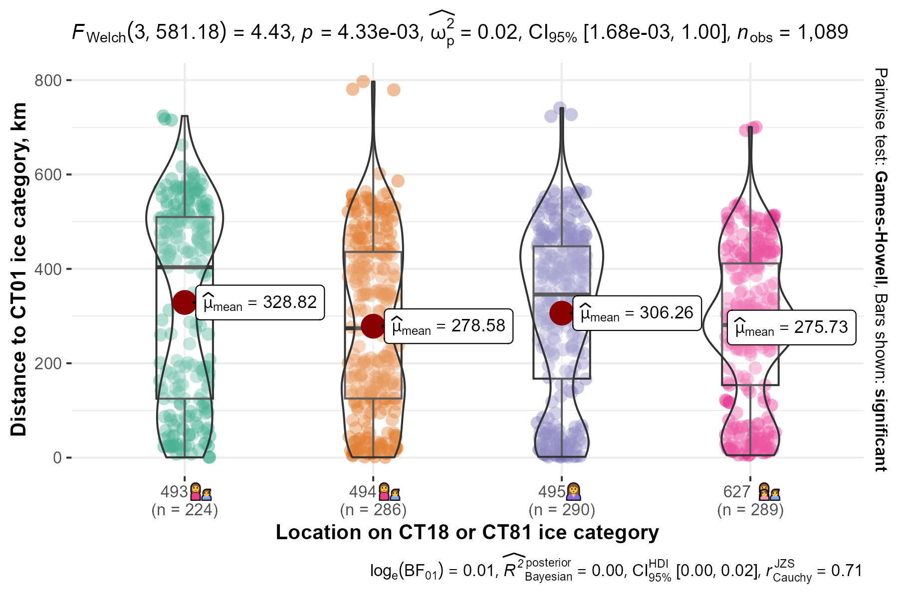 .shared[ Lorem rhoncus felis orci eros blandit aliquam phasellus vitae sollicitudin! Lacus vehicula neque eleifend nisl; cras venenatis ullamcorper metus? Per viverra scelerisque laoreet penatibus suspendisse himenaeos laoreet accumsan. Vitae vivamus tristique volutpat eu sagittis nulla porttitor interdum donec. ] ] For polar bears in the Kara Sea region the distance to sea ice edge is not important abiotic parameter. ] ] --- name: H2ffc7 .toc.sidebar.left-column[ .outline[ # [.pass[Activity] ](#He38f8) # [.pass[Results] ](#H962da).fg[] ## [Field work](#H962da) ## [Satellite telemetry](#H3ffd0) ## [.pass[Aerial surveys] ](#H2ffc7).fg[] ### [Kara Sea](#H2ffc7).fg[].bg[] ### [East Siberian Sea](#Hb7be9) ## [.pass[Health assessment] ](#H8e245) # [.pass[Publications] ](#bib) ] ] .toc.mainbar.right-column.scrollable[ .header.h3.show[ Aerial survey of the Kara Sea polar bear subpopulation in 2025 .parent[.grand[.pass[Aerial surveys] .grand[.pass[Results]]]] ] .fixprecode[ .grid[ 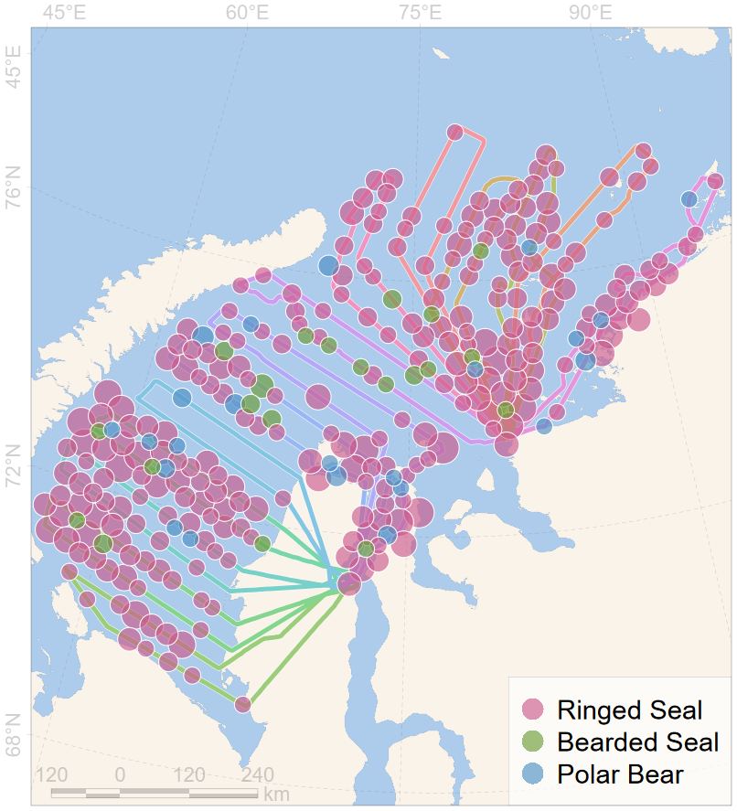 .desc[ Polar bears and other marine mammals were counted from an AN-28 aircraft using visual and instrumental (surveying in visible- and infrared- ranges) methods in April-May 2025. 37 polar bears (24 adults and 13 cubs), 1097 ringed seals, 32 bearded seals and were visually recorded. .smaller[ Results of the instrumental survey and population estimates will be available in 2026. ] ] ] ] ] --- name: Hb7be9 .toc.sidebar.left-column[ .outline[ # [.pass[Activity] ](#He38f8) # [.pass[Results] ](#H962da).fg[] ## [Field work](#H962da) ## [Satellite telemetry](#H3ffd0) ## [.pass[Aerial surveys] ](#H2ffc7).fg[] ### [Kara Sea](#H2ffc7) ### [East Siberian Sea](#Hb7be9).fg[].bg[] ## [.pass[Health assessment] ](#H8e245) # [.pass[Publications] ](#bib) ] ] .toc.mainbar.right-column.scrollable[ .header.h3.show[ Aerial survey in the Medvezhyi Islands (East Siberian Sea) .parent[.grand[.pass[Aerial surveys] .grand[.pass[Results]]]] ] .fixprecode[ .font80[ Helicopter aerial monitoring performed by National Park «Lensky Pillars». Instrumental survey provided by «Ecofactor». Results after visual surveys: .pulling[ .pull-left[ 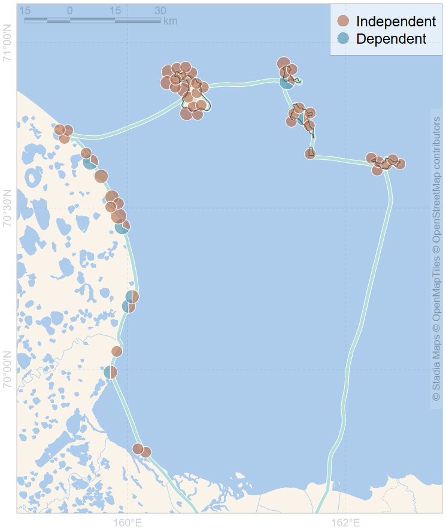 October 2024: 71 individuals (61 single bears and 10 females with cubs). ] .pull-right[ <img src="assets/chersky-2025.png" width="1330" height="700" style="display: block; margin: auto auto auto 0;" /> September 2025: 106 individuals (75 single bears and 31 females with cubs). ] ] ] ] ] --- name: H8e245 .toc.sidebar.left-column[ .outline[ # [.pass[Activity] ](#He38f8) # [.pass[Results] ](#H962da).fg[] ## [Field work](#H962da) ## [Satellite telemetry](#H3ffd0) ## [.pass[Aerial surveys] ](#H2ffc7) ## [.pass[Health assessment] ](#H8e245).fg[] ### [Organic pollutants](#H8e245).fg[].bg[] ### [Heavy metals](#Hbcefd) ### [Seropositivity](#H8d083) ### [Bacterial/fungal com.](#H192ab) ### [Immunity](#Hbd323) ### [Genetics](#Hc78de) # [.pass[Publications] ](#bib) ] ] .toc.mainbar.right-column.scrollable[ .header.h3.show[ Organic pollutants in serum samples .parent[.grand[.pass[Health assessment] .grand[.pass[Results]]]] ] .fixprecode[ .grid[ <img src="assets/organic-PCB.png" width="1330" height="700" style="display: block; margin: auto auto auto 0;" /> 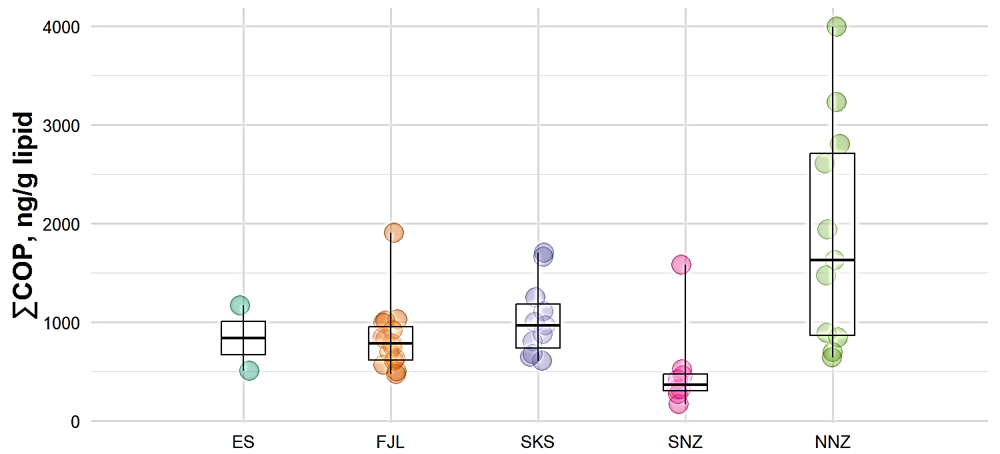 .desc[ Organic pollutants in serum samples from polar bears in Kara-Barents region and East Siberian Sea. .caption[ ES – East Siberian Sea FJL – Franz Josef Land SKS – southern Kara Sea SNZ – southern Novaya Zemlya NNZ – northern Novaya Zemlya ] ] ] ] ] ??? We measured toxicant levels in polar bears in Kara-Barents region and obtained firs two samples from East Siberian sea. Samples from Franz Josef Land and southern Kara Sea most likely represents average values for the respective subpopulations while samples from Novaya Zemlya are some what extreme as bears sampled in northern part of archipelago were extremely thin, and bears from southern part feeds extensively on food waste from nearest settlement. First samples from East Siberian sea were average in terms of total pesticide content while contains lowest amounts of total polychlorinated biphenyls we obtained so far. --- name: Hbcefd .toc.sidebar.left-column[ .outline[ # [.pass[Activity] ](#He38f8) # [.pass[Results] ](#H962da).fg[] ## [Field work](#H962da) ## [Satellite telemetry](#H3ffd0) ## [.pass[Aerial surveys] ](#H2ffc7) ## [.pass[Health assessment] ](#H8e245).fg[] ### [Organic pollutants](#H8e245) ### [Heavy metals](#Hbcefd).fg[].bg[] ### [Seropositivity](#H8d083) ### [Bacterial/fungal com.](#H192ab) ### [Immunity](#Hbd323) ### [Genetics](#Hc78de) # [.pass[Publications] ](#bib) ] ] .toc.mainbar.right-column.scrollable[ .header.h3.show[ Heavy metals in hair damples .parent[.grand[.pass[Health assessment] .grand[.pass[Results]]]] ] .fixprecode[ .grid[ <img src="assets/heavymetal-Mn.png" width="1330" height="700" style="display: block; margin: auto auto auto 0;" /> <img src="assets/heavymetal-Hg.png" width="1330" height="700" style="display: block; margin: auto auto auto 0;" /> .desc[ Heavy metals in hair damples from polar bears in Kara-Barents region and East Siberian Sea Mercury samples are expanded from <span class="cite hovertext" data-hover="Total Mercury and Stable Nitrogen and Carbon Isotope Content in Polar Bear Hair in the Russian Arctic"><a name=cite-mercury2025-en></a>([Gremyachikh et al., 2025](#bib))</span>. .caption[ ES – East Siberian Sea FJL – Franz Josef Land SKS – southern Kara Sea SNZ – southern Novaya Zemlya NNZ – northern Novaya Zemlya ] ] ] ] ] ??? We measured hair concentration of heavy metals in polar bears from same locations. We can assume that there is a tendency for manganese concentrations to increase in an easterly direction. At the same time, we did not find any clear trends for mercury, as bears from Franz Josef Land did not differ from bears from the southern part of the Kara Sea in terms of mercury concentrations. --- name: H8d083 .toc.sidebar.left-column[ .outline[ # [.pass[Activity] ](#He38f8) # [.pass[Results] ](#H962da).fg[] ## [Field work](#H962da) ## [Satellite telemetry](#H3ffd0) ## [.pass[Aerial surveys] ](#H2ffc7) ## [.pass[Health assessment] ](#H8e245).fg[] ### [Organic pollutants](#H8e245) ### [Heavy metals](#Hbcefd) ### [Seropositivity](#H8d083).fg[].bg[] ### [Bacterial/fungal com.](#H192ab) ### [Immunity](#Hbd323) ### [Genetics](#Hc78de) # [.pass[Publications] ](#bib) ] ] .toc.mainbar.right-column.scrollable[ .header.h3.show[ Analysis of polar bears seropositivity .parent[.grand[.pass[Health assessment] .grand[.pass[Results]]]] ] .fixprecode[ .grid[ .grid-left-60[ <img src="assets/naidenko-trichinella-rs.png" width="1330" height="700" style="display: block; margin: auto auto auto 0;" /> <img src="assets/naidenko-canine-rs.png" width="1330" height="700" style="display: block; margin: auto auto auto 0;" /> ] .grid-right-40[ .smaller[ Main results are published <span class="cite hovertext" data-hover="Occurrence of Pathogens in the Barents Sea Polar Bear (Ursus maritimus) Subpopulation"><a name=cite-Naidenko2023_en></a>([Naidenko et al., 2023](#bib))</span>. Pathogens: + Canine distemper virus + Herpes simplex virus + Parvovirus + Toxoplasma + Trichinella (*Trichinella sp.*) + Mycoplasma (*Mycoplasma sp.*) + Candida (*Candida sp.*) + Chlamydia (*Chlamydia sp.*) .caption[ Seropositive proportion for Trichinella (*top*) and Canine distemper virus (*bottom*) ] ] ] ] ] ] ??? We analyzed the polar bear’s seropositivity of the Barents and Kara Seas subpopulations to eight pathogens: Canine distemper virus, Herpes simplex virus, Parvovirus, Toxoplasma, Trichinella (Trichinella sp.), Mycoplasma (Mycoplasma sp.), Candida (Candida sp.) and Chlamydia (Chlamydia sp.). Trichinella and Canine distemper virus data are presented for five model areas: Novaya Zemlya; Franz Josef Land; Taimyr Peninsula; Yamal Islands in the Kara Sea. Over the past 10 years, there has been an increase in seropositivity to the Canine distemper virus and Trichinella, which may be due to: changes in the presence of pathogens in natural ecosystems; epizootic among potential victims; an increase in the number of contacts between bears on land. Proportion of polar bears seropositive for Trichinella Proportion of polar bears seropositive for Canine distemper virus Naidenko, S.V., et al. (2023). Occurrence of Pathogens in the Barents Sea Polar Bear (Ursus maritimus) Subpopulation. Biology Bulletin, 50:9. P. 2454–2459. Это мы уже представляли в 2023 г. --- name: H192ab .toc.sidebar.left-column[ .outline[ # [.pass[Activity] ](#He38f8) # [.pass[Results] ](#H962da).fg[] ## [Field work](#H962da) ## [Satellite telemetry](#H3ffd0) ## [.pass[Aerial surveys] ](#H2ffc7) ## [.pass[Health assessment] ](#H8e245).fg[] ### [Organic pollutants](#H8e245) ### [Heavy metals](#Hbcefd) ### [Seropositivity](#H8d083) ### [Bacterial/fungal com.](#H192ab).fg[].bg[] ### [Immunity](#Hbd323) ### [Genetics](#Hc78de) # [.pass[Publications] ](#bib) ] ] .toc.mainbar.right-column.scrollable[ .header.h3.show[ Bacterial and fungal community .parent[.grand[.pass[Health assessment] .grand[.pass[Results]]]] ] .fixprecode[ .grid[ 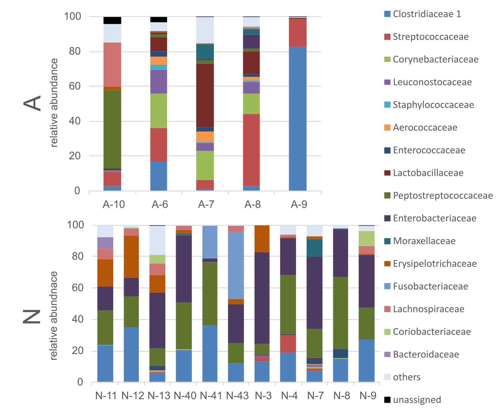 .desc[ .smaller[ Feeding on human waste does not cause any signs of dysbiosis and probably leads to adaptive changes in the bacterial microbiome. Emergence of fungal facultative pathogens increases the risk of infections. Details in <span class="cite hovertext" data-hover="Anthropogenic Neighborhood Impact on Bacterial and Fungal Communities in Polar Bear Feces"><a name=cite-Vechersky2023></a>([Vecherskii et al., 2023](#bib))</span> ] ] ] ] ] --- name: Hbd323 .toc.sidebar.left-column[ .outline[ # [.pass[Activity] ](#He38f8) # [.pass[Results] ](#H962da).fg[] ## [Field work](#H962da) ## [Satellite telemetry](#H3ffd0) ## [.pass[Aerial surveys] ](#H2ffc7) ## [.pass[Health assessment] ](#H8e245).fg[] ### [Organic pollutants](#H8e245) ### [Heavy metals](#Hbcefd) ### [Seropositivity](#H8d083) ### [Bacterial/fungal com.](#H192ab) ### [Immunity](#Hbd323).fg[].bg[] ### [Genetics](#Hc78de) # [.pass[Publications] ](#bib) ] ] .toc.mainbar.right-column.scrollable[ .header.h3.show[ Analysis of polar bears immunity at different points .parent[.grand[.pass[Health assessment] .grand[.pass[Results]]]] ] .fixprecode[ .grid[ .grid-left-65[ 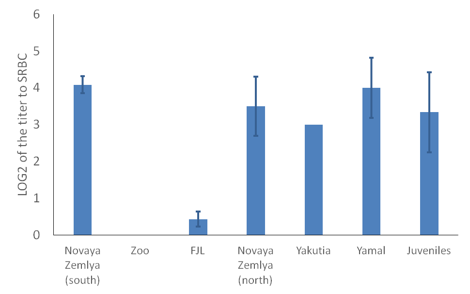 <img src="assets/immunity-lysozyme.png" width="1330" height="700" style="display: block; margin: auto auto auto 0;" /> ] .grid-right-35[ .smaller[ Total amount of natural antibodies was extremely low in zoos and on Franz-Josef Land. The concentration of Lysozyme concentration (antibacterial protein) was very low at the Novaya Zemlya islands. An activity of the system of complement was very low in all populations. Details in <span class="cite hovertext" data-hover="Hematological differences in Barents and Kara Seas polar bears (Ursus maritimus): what factors matter?"><a name=cite-Alekseeva2025></a>([Alekseeva et al., 2025](#bib))</span>. ] ] ] ] ] ??? Three main immune parameters were estimated: Total amount of natural antibodies (detected in the test to non-replicated antigen – sheep red blood cells). It was extremely low in zoos (incorrect diet?) and on Franz-Josef Land. We don’t know how it can be related to the infectious diseases. Lysozyme concentration (antibacterial protein). Its concentration was very low at the Novaya Zemlya islands An activity of the system of complement. It was very low in all populations. Probably this component of immunity is under-developed in polar bears. Это мы уже представляли в 2023 г. --- name: Hc78de .toc.sidebar.left-column[ .outline[ # [.pass[Activity] ](#He38f8) # [.pass[Results] ](#H962da).fg[] ## [Field work](#H962da) ## [Satellite telemetry](#H3ffd0) ## [.pass[Aerial surveys] ](#H2ffc7) ## [.pass[Health assessment] ](#H8e245).fg[] ### [Organic pollutants](#H8e245) ### [Heavy metals](#Hbcefd) ### [Seropositivity](#H8d083) ### [Bacterial/fungal com.](#H192ab) ### [Immunity](#Hbd323) ### [Genetics](#Hc78de).fg[].bg[] # [.pass[Publications] ](#bib) ] ] .toc.mainbar.right-column.scrollable[ .header.h3.show[ Population structure .parent[.grand[.pass[Health assessment] .grand[.pass[Results]]]] ] .fixprecode[ .grid[ <img src="assets/sorokin-stere-all-en.png" width="1330" height="700" style="display: block; margin: auto auto auto 0;" /> .shared[ Adipiscing aptent iaculis nostra sed placerat etiam primis, suspendisse aptent iaculis venenatis. Sem torquent phasellus blandit, aenean rhoncus parturient viverra facilisi. ] ] Homogeneity for Kara Sea and northern Barents Sea. Heterogeneity for South-Eastern Barents Sea. Details in <span class="cite hovertext" data-hover="Population Genetic Structure in Polar Bears (Ursus maritimus) from the Russian Arctic Seas"><a name=cite-Sorokin2023en></a>([Sorokin et al., 2023](#bib))</span>. ] ] --- name: bib .toc.sidebar.left-column[ .outline[ # [.pass[Activity] ](#He38f8) # [.pass[Results] ](#H962da) # [.pass[Publications] ](#bib).fg[] ## [2023-2025](#bib).fg[].bg[] ] ] .toc.mainbar.right-column.scrollable[ .header.h2.show[ Publications 2023-2025 .parent[.grand[.pass[Publications]]] ] .fixprecode[ <a name=bib-Alekseeva2025></a>[Alekseeva, G. S., E. A. Ivanov, I. A. Mizin, N. G. Platonov, I. N. Mordvintsev, V. V. Rozhnov, and S. V. Naidenko](#bib) (2025). "Hematological differences in Barents and Kara Seas polar bears (_Ursus maritimus_): what factors matter?" In: _Polar Biology_ 48.1. ISSN: 1432-2056. DOI: [10.1007/s00300-024-03326-w](https://doi.org/10.1007%2Fs00300-024-03326-w). <a name=bib-mercury2025-en></a>[Gremyachikh, V. A., V. T. Komov, E. A. Ivanov, I. N. Mordvintsev, S. V. Naidenko, N. G. Platonov, I. A. Mizin, A. I. Isachenko, R. E. Lazareva, E. S. Ivanova, L. S. Eltsova, and V. V. Rozhnov](#bib) (2025). "Total Mercury and Stable Nitrogen and Carbon Isotope Content in Polar Bear Hair in the Russian Arctic". In: _Russian Journal of Ecology_ 56.4. (_IN PRINT_), pp. 366-374. ISSN: 1067-4136. <a name=bib-Naidenko2023_en></a>[Naidenko, S. V., P. S. Klyuchnikova, E. A. Ivanov, I. N. Mordvintsev, N. G. Platonov, A. I. Isachenko, R. E. Lazareva, and V. V. Rozhnov](#bib) (2023). "Occurrence of Pathogens in the Barents Sea Polar Bear (_Ursus maritimus_) Subpopulation". In: _Biology Bulletin_ 50.9, p. 2454–2459. ISSN: 1608-3059. DOI: [10.1134/s106235902309025x](https://doi.org/10.1134%2Fs106235902309025x). <a name=bib-Sorokin2023en></a>[Sorokin, P. A., E. Y. Zvychaynaya, E. A. Ivanov, I. A. Mizin, I. N. Mordvintsev, N. G. Platonov, A. I. Isachenko, R. E. Lazareva, and V. V. Rozhnov](#bib) (2023). "Population Genetic Structure in Polar Bears (_Ursus maritimus_) from the Russian Arctic Seas". In: _Russian Journal of Genetics_ 59.12, p. 1320–1332. ISSN: 1608-3369. DOI: [10.1134/s1022795423120128](https://doi.org/10.1134%2Fs1022795423120128). <a name=bib-Vechersky2023></a>[Vecherskii, M. V., T. A. Kuznetsova, D. R. Khayrullin, A. A. Stepankov, S. M. Artemieva, P. V. Chukmasov, E. A. Ivanov, I. A. Mizin, I. N. Mordvintsev, N. G. Platonov, A. A. Pashali, A. I. Isachenko, R. E. Lazareva, K. M. Shestakova, and V. V. Rozhnov](#bib) (2023). "Anthropogenic Neighborhood Impact on Bacterial and Fungal Communities in Polar Bear Feces". In: _Animals_ 13.13, p. 2067. ISSN: 2076-2615. DOI: [10.3390/ani13132067](https://doi.org/10.3390%2Fani13132067). ] ]